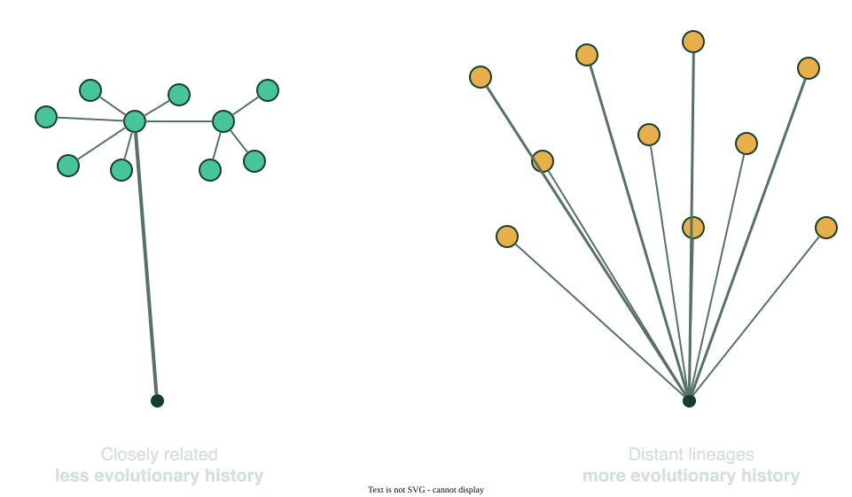
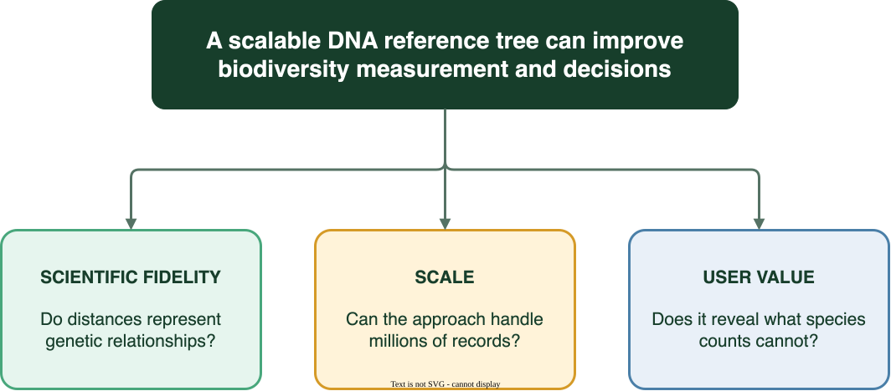
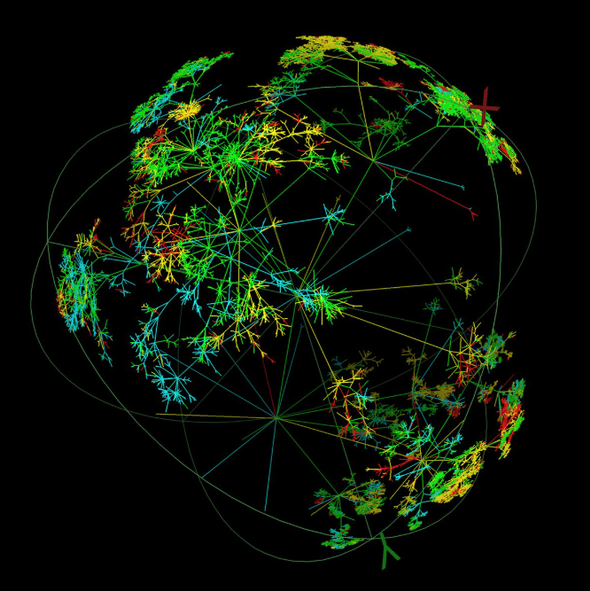
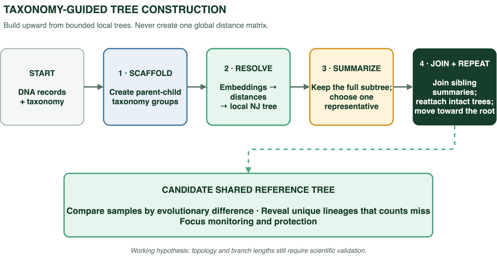
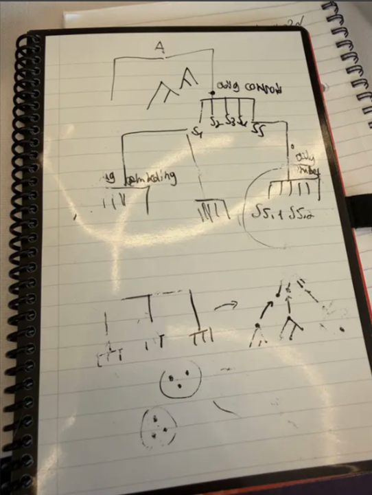
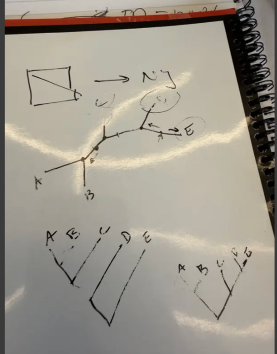
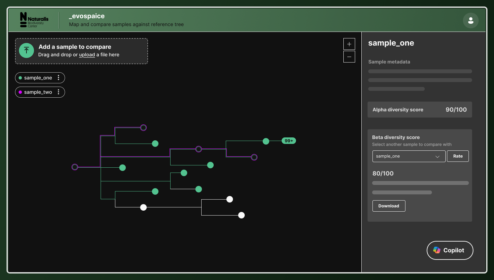
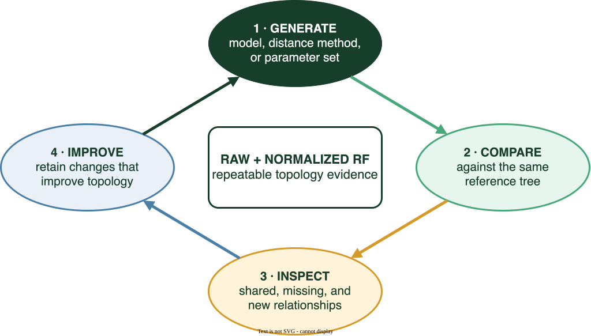

Species counts hide what is hardest to replace.
Two sites can each contain ten species, yet one can hold far more unique evolutionary history. A count ranks them equally.

We can identify millions of species. We cannot compare their evolutionary value at the same scale.
EvoSpaice tests whether a scalable DNA reference tree can close that gap and improve biodiversity prioritization.


Traditional tree building depends on pairwise sequence comparison. At this scale, the global distance matrix is the barrier.
Build one scalable reference tree from bounded local trees.
Taxonomy defines each group. Embedding distances and Neighbor Joining resolve it. An intact subtree and its representative move upward until one candidate tree remains.
Compare sites or timepoints on one evolutionary scale, reveal unique lineages that species counts miss, and focus monitoring or protection where loss is hardest to replace.



Taxonomy + embeddings
Taxonomy constrains each local problem; embeddings resolve relationships within it.
Embeddings only
A second route tests whether taxonomy improves the generated topology.
The pipeline handles the scale.
See what changed, what is distinctive, and what is hardest to replace.
Upload and map samples against one shared reference tree.
Compare diversity within a sample and between samples.
Prioritize investigation, restoration, or protection.


Evaluate.
Learn. Improve.
Every experiment can be compared with the same reference using raw and normalized Robinson-Foulds topology scores.
From counting species to measuring the evolutionary history they represent.